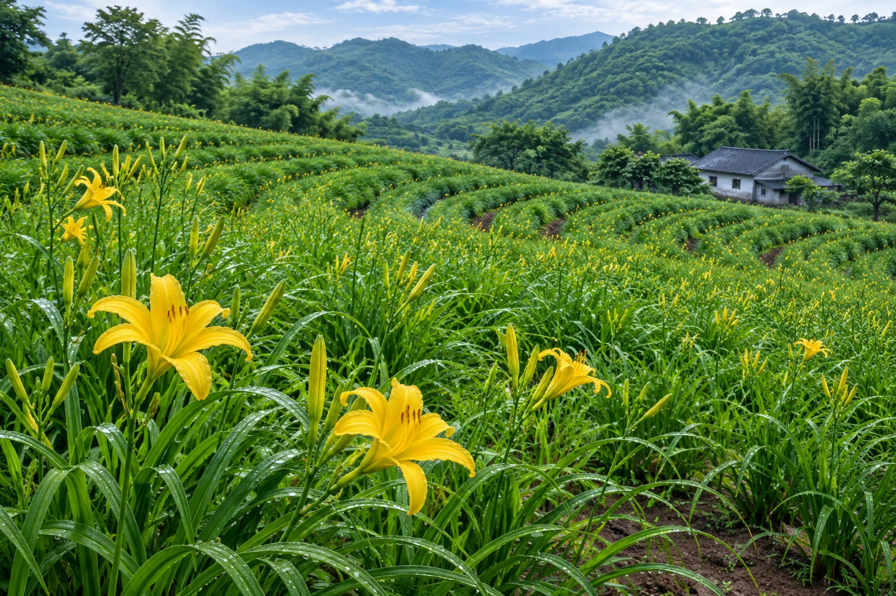
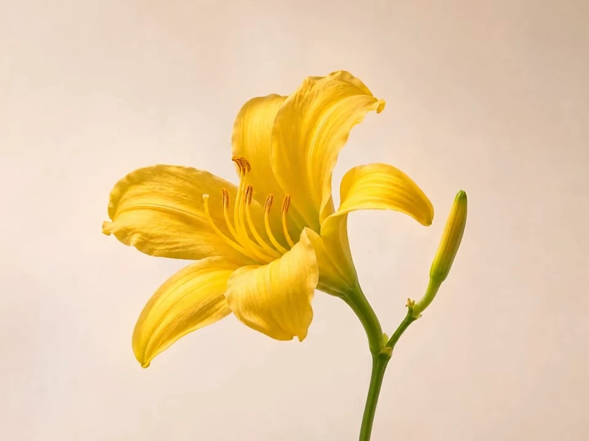
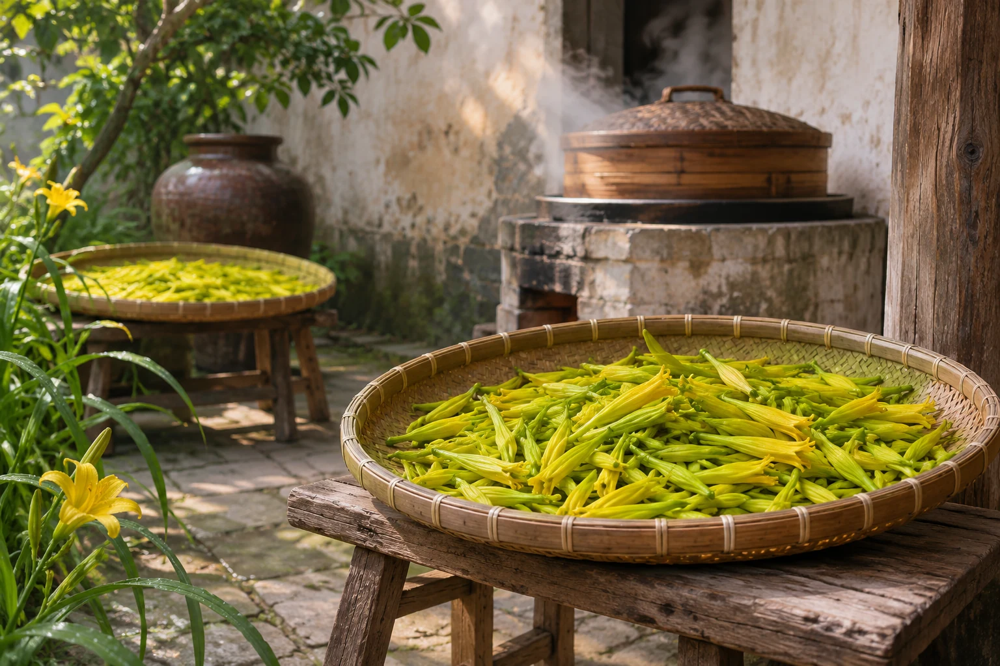
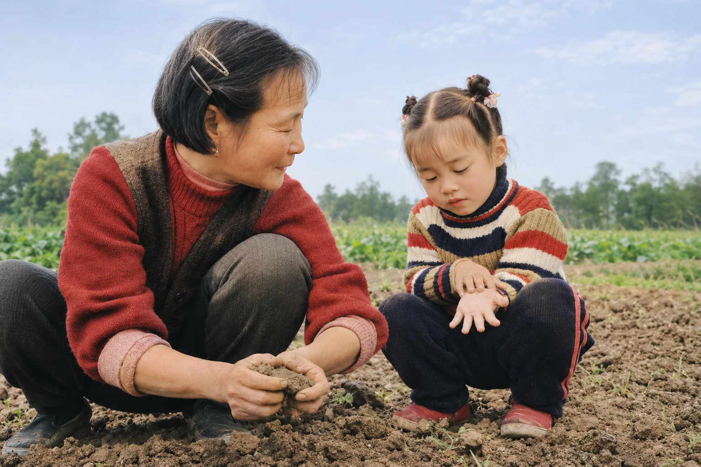

黄花之乡
在四川达州渠县，清溪、望江等乡镇种植黄花。进入采收季，田间陆续收下还未绽放的金黄色花苞。
渠县黄花产业报道 ↗渠县黄花 数字艺术展
一场指尖与黄花的相遇
一朵黄花，一方水土，
一场关于生命的绽放。
摄像头画面仅在本机处理

右手拇指与食指控制开合；左手张掌，向左进入下一主题，向右返回上一主题。
只将你的左手放入镜头，右手暂时移开，再点击下方按钮。系统会记住这只手用于切换页面。
用右手的拇指与食指开合，掌心朝向镜头。点击记录后有两秒时间摆好手势，随后请短暂停留。
先将拇指与食指捏紧，再张开到舒适的最大幅度；也可直接使用“将当前张开设为100%”。
ROOTED IN THE LAND
从花田到竹筛，渠县黄花的采制手艺，留住家乡的金色滋味。
CULTURE

在四川达州渠县，清溪、望江等乡镇种植黄花。进入采收季，田间陆续收下还未绽放的金黄色花苞。
渠县黄花产业报道 ↗
黄花也被称作忘忧草、母亲花。两个名字，一边寄托消解忧愁的愿望，一边连着对母亲与家乡的思念。
了解忘忧与母亲花文化 ↗
从田间拣采到选料、蒸制、摊晾，鲜嫩的花苞经过一道道工序，才成为餐桌上熟悉的干黄花。
查看采摘与加工纪实 ↗
计算机视觉识别手部关键点，双指距离决定花开到哪一步。停在半开处，可以慢慢观察平时容易错过的变化。
回到互动展品 ↑花田与竹筛配图为 AI 场景示意；田间记忆依据家庭原照 AI 重绘。花卉动态取自原有互动素材。
BLOOM TO TABLE
GOOD THINGS, FROM THEIR ORIGIN
探索更多产地好物
ABOUT
掌间花开，是一场四川特色花卉、乡土文化与数字艺术的相遇。从渠县黄花、江油辛夷、中江荷花、犍为茉莉到攀枝花木棉，以双手为媒介，轻挥切换花卉，指尖开合控制绽放。借助AI辅助开发与MediaPipe手势识别技术，让每一朵花在数字空间中生动呈现。
项目创新性融合智能交互、非遗文化与特色农产品推介，串联“指尖互动—文化认知—产品推介—消费连接”的数字助农路径。我们希望以互动唤起好奇，以产地故事传递乡土温度，以真实产品渠道连接消费市场，让被看见的不只是一朵花，更是花背后的土地、手艺与劳作，探索数字技术赋能乡村振兴的新路径。